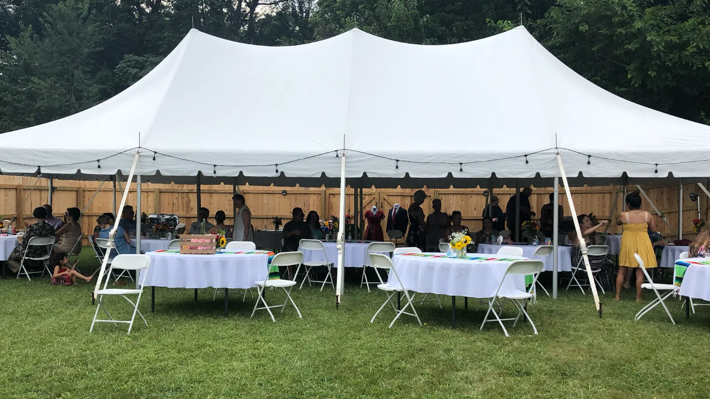
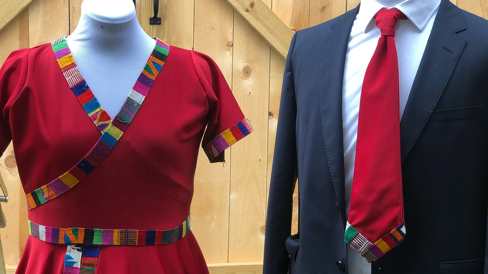
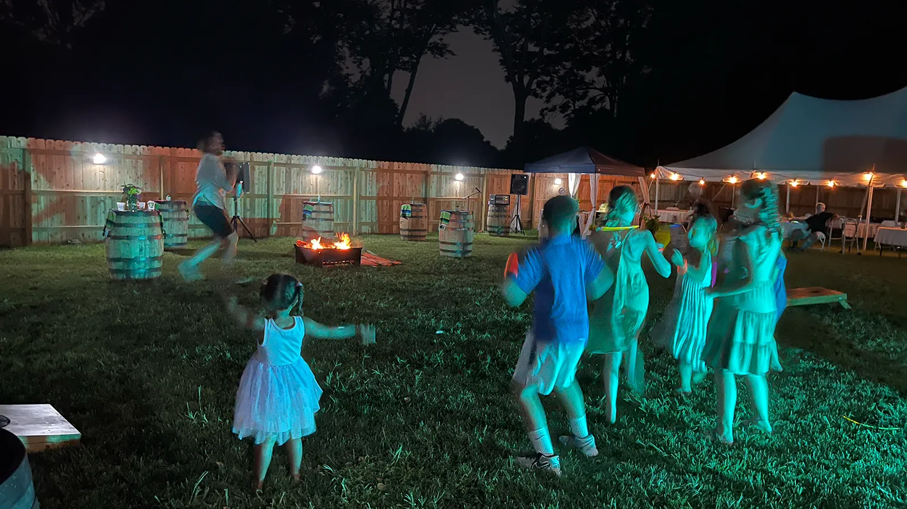
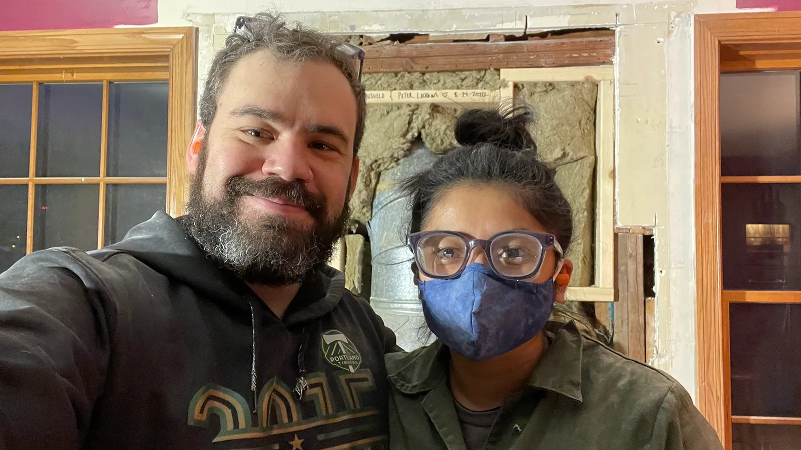
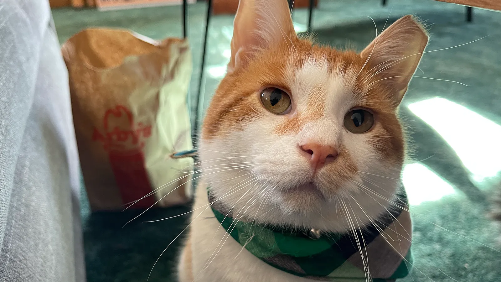

First Date
January 5, 2018 · Indianapolis, IN
After meeting in late 2017, they had their first date in January 2018. Peter was late to their first date—something
Consuelo has yet to let him live down after 8+ years. Timeliness aside, they hit it off
immediately, bonding over their shared creative interests and their favorite TV shows (I love you, rum ham).
Engagement
October 5, 2019 · Seoul, South Korea
During their 2019 trip to South Korea, Peter asked Consuelo to marry him outside the Gyeongbokgung Palace. After saying yes, Consuelo said "Thank you", which Peter has not let her live down.
Wedding
August 24, 2020 · Traverse City, MI
They married in a very small, private ceremony at The Botanic Garden at Historic Barns Park in the midst of the COVID-19
pandemic followed by a dinner at Left Foot Charle's The Barrel Room.
-

-

-
-

Reception
August 21, 2021 · Indianapolis, IN
A year later with COVID-19 more under control, they were able to finally celebrate their delayed reception with family and friends
at their home, a few days before their first anniversary.
-

-

-
-
-
Today
August 23, 2026 · Indianapolis, IN
They live in Indianapolis with their two dogs, Olive and Willie, and their two cats, Chucho and Xuxa. Although they are better at starting home renovations than they are finishing them, they continue to make their house the home they love.